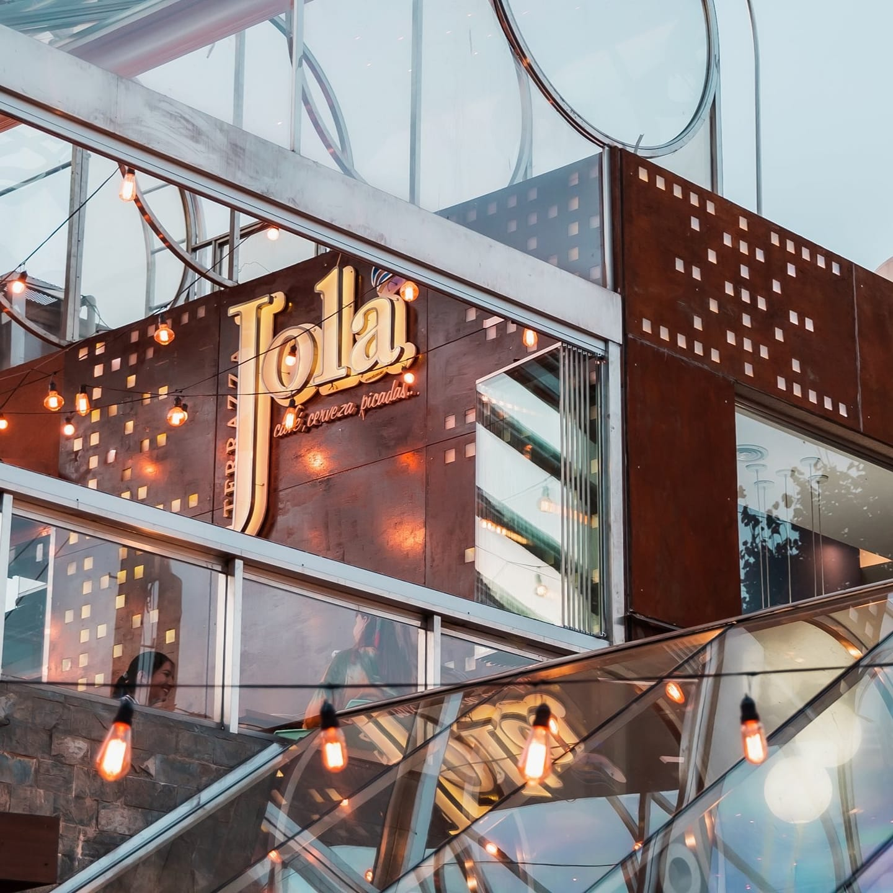

TERRAZA JOLÁ
Bienvenidos a Jola, el restaurante donde la cocina de autor se mezcla con lo casero para ofrecerte una experiencia única. Cada plato está pensado para sorprender con sabores frescos, ingredientes de estación y una presentación que enamora. Ya sea para un almuerzo relajado o una cena especial, en Jola vas a encontrar un ambiente cálido, atención cercana y una carta que cambia con las estaciones. Vení a disfrutar de lo simple, hecho con amor.
